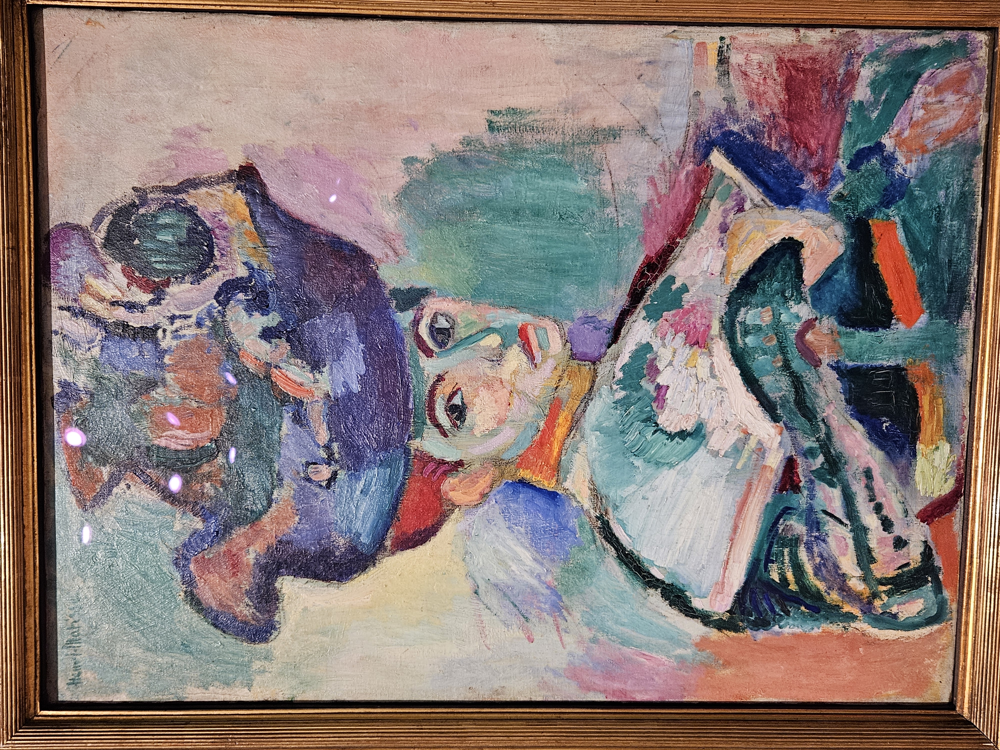
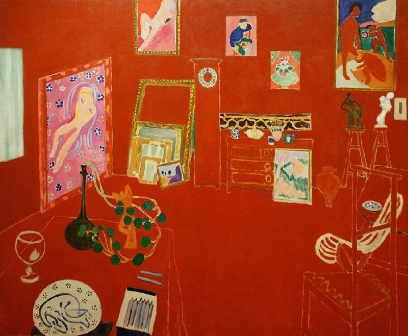
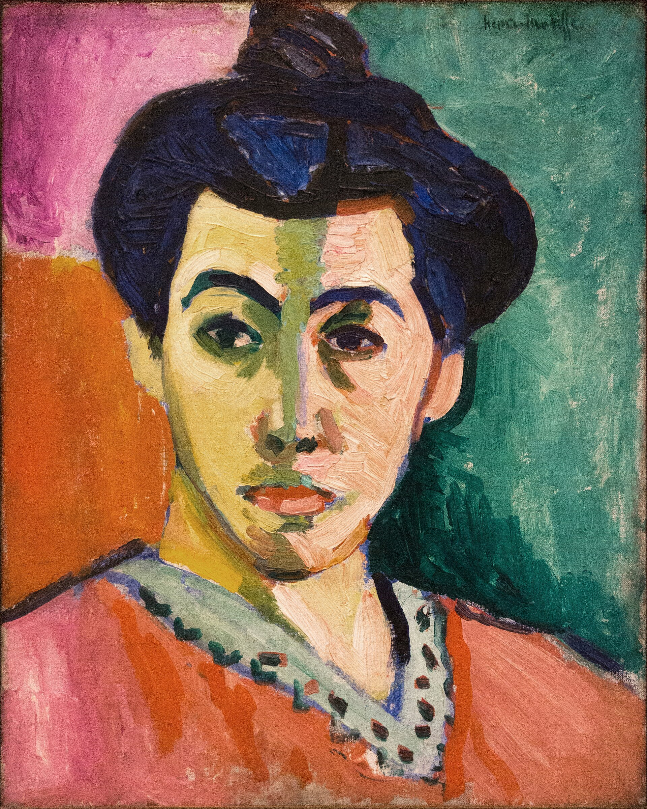
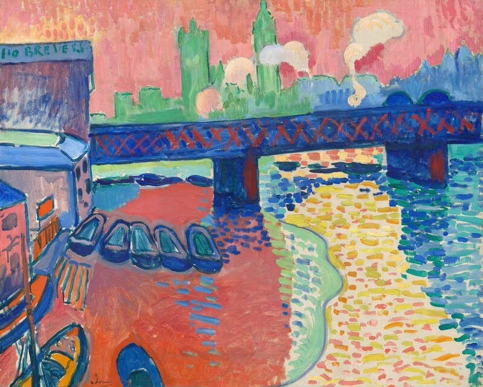
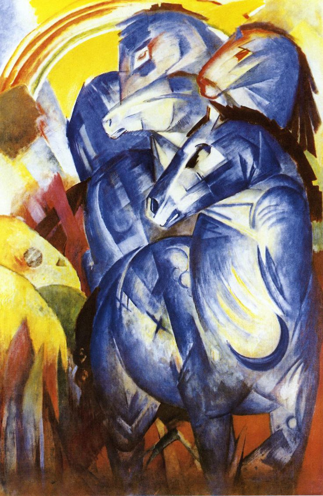
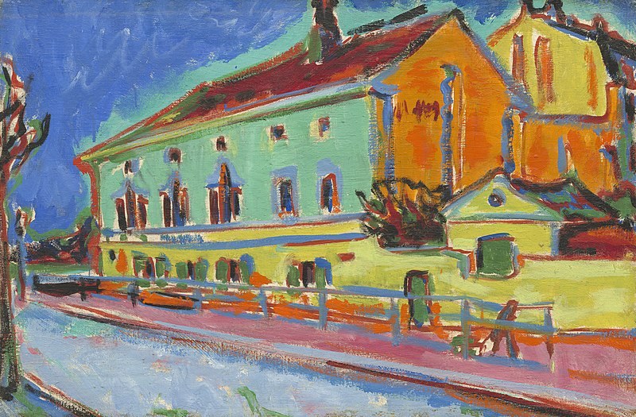
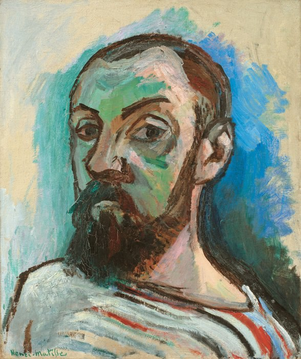

Meesterwerk: Vrouw met een Hoed
Henri Matisse, 1905

⚜️ UITGEBREIDE STIJLFIGUREN
🎨 KLEUR ALS EMOTIE
Pure kleur: Onvermengd, rechtstreeks uit de tube. Geen modulatie, geen schaduw.
Arbitrair: Groene gezichten, paarse schaduwen. Kleur is expressie, niet beschrijving.
🔗 Tijdsgeest Connecties
Psychologie: Freud's "Die Traumdeutung" (1900) - kleuren tonen het onderbewuste
Wetenschap: Einstein's relativiteitstheorie (1905) - geen absolute waarheid, geen "echte" kleur
Kunst: Picasso's "Demoiselles d'Avignon" (1907) - radicaal breken met traditie
🖌️ LOSSE PENSEELVOERING
Snel, spontaan: De schets is het werk. Geen gladde afwerking.
Zichtbare toets: Je ziet elke veeg. De hand van de kunstenaar is aanwezig.
🔗 Tijdsgeest Connecties
Historisch: Fotografie (algemeen sinds 1888 Kodak) maakt realisme overbodig
Politiek: Anti-bourgeois houding - weigeren "mooi" te schilderen voor de markt
Techniek: Impressionisme opgevoerd - nog radicaler, nog directer
📐 VLAKHEID
Geen diepte: Het doek is een vlak, geen raam naar de wereld.
Decoratief: Patroon en ornament zijn belangrijker dan illusionisme.
🔗 Tijdsgeest Connecties
Filosofie: Anti-academisme - weigeren de regels van de École des Beaux-Arts
Kunst: Invloed van Japanse prenten (ukiyo-e) en Islamitische patronen
Politiek: Kolonialisme - exotische culturen als inspiratiebron
😊 VREUGDE & VITALITEIT
Levenslust: Matisse zocht "een kunst van evenwicht, zuiverheid, rust."
Zuidelijk: Collioure, Marokko, Tahiti - vlucht uit het grijze Europa.
🔗 Tijdsgeest Connecties
Historisch: Vlak voor WO I - de laatste zomer van onschuld
Politiek: Kolonialisme - "het paradijs" gezocht in koloniën
Literatuur: Gide's "L'Immoraliste" (1902) - bevrijding van moraal
🔗 TIJDSGEEST CONTEXT (1905-1910)
🏛️ POLITIEK PERSPECTIEF: Europa balanceert op de rand van oorlog. De Entente Cordiale (1904) verbindt Frankrijk en Engeland. Marokko-crisissen (1905, 1911) dreigen met conflict. Rusland verliest van Japan (1905) - eerste Aziatische overwinning op Europa. In Frankrijk heerst het "Belle Époque" optimisme, maar de donkere wolken pakken zich samen.
📚 LITERAIR PERSPECTIEF: Proust begint "À la recherche du temps perdu" (1909). Apollinaire's "Alcools" (verzameld 1913) breekt met traditie. Gide verkent immoraliteit en bevrijding. Het symbolisme maakt plaats voor modernisme. Literatuur wordt introspectiever, experimenteler.
🧠 PSYCHOLOGISCH PERSPECTIEF: Freud's "Die Traumdeutung" (1900) revolutioneert het denken. Het onderbewuste wordt erkend als bron van creativiteit. Dromen, verlangens, instincten mogen er zijn. Janet's werk over dissociatie. De mens is niet rationeel maar gedreven door onzichtbare krachten - net zoals Fauve-kleuren onzichtbare emoties tonen.
⚙️ HISTORISCH PERSPECTIEF: De auto wordt gemeengoed (Ford Model T, 1908). De vliegtuig (Wright Brothers, 1903). De film (Méliès, 1902). Radio en telegraaf verbinden de wereld. Fotografie is alledaags - de kunst hoeft niet meer realistisch te zijn. Kolonialisme is op zijn hoogtepunt: Frankrijk beheerst Noord-Afrika, inspiratiebron voor Matisse.
🎭 FILOSOFISCH PERSPECTIEF: Bergson's "l'élan vital" (levensdrang, 1907) viert intuïtie boven intellect. Einstein's relativiteit (1905) toont dat niets absoluut is. Het existentialisme kiemt. De mens zoekt vrijheid, spontaniteit, authenticiteit - precies wat de Fauves in kleur uitdrukken.
🎨 MEESTERWERKEN - GEDETAILLEERDE ANALYSE
1. "Vrouw met een Hoed" (1905) — Henri Matisse
SFMOMA, San Francisco | 80 × 60 cm | Olieverf op doek
🔍 STIJLANALYSE
Kleur: Groen op de neus, roze op de wang, blauwe baard. Geen realistische huidskleur maar pure expressie.
Hoed: Een explosie van kleur - rood, groen, blauw, geel. De hoed domineert het gezicht.
Emotie: Vrolijkheid, levenslust, durf. Kleur als pure expressie van gevoel.
Reactie: Critici noemden het "wild" en "barbaars" - vandaar de naam "Fauves" (wilde beesten).
2. "De Vreugde van het Leven" (1905-1906) — Henri Matisse
Barnes Foundation, Philadelphia | 175 × 241 cm | Olieverf op doek
🔍 STIJLANALYSE
Tropisch paradijs: Niet realistisch, maar een ideaal van vreugde en sensualiteit.
Compositie: Cirkelvormige dans. Eenheid van mens en natuur in harmonie.
Kleuren: Groen bomen, blauwe lucht, oranje aarde, roze en blauwe lichamen.
Invloed: Dit werk inspireerde Picasso tot "Les Demoiselles d'Avignon".
3. "Luxe, Calme et Volupté" (1904) — Henri Matisse
Musée d'Orsay, Parijs | 98 × 118 cm | Olieverf op doek
🔍 STIJLANALYSE
Neo-impressionisme: Nog pointillistische techniek, maar losser dan Seurat. De overgang naar Fauvisme.
Thema: Charles Baudelaire's gedicht "L'Invitation au voyage" - luxe, rust en wellust.
Kleur: Warm zuidelijk licht. De toekomstige Fauve-kleuren zijn al aanwezig.
Betekenis: Een ultieme ontsnapping naar een paradijs van genot.
4. "Het Rode Atelier" (1911) — Henri Matisse
MoMA, New York | 181 × 219 cm | Olieverf op doek

🔍 STIJLANALYSE
Monochroom rood: De hele ruimte is één kleur - rood als emotie, niet als beschrijving.
Diepte opheffen: Vloer, muren, meubels - alles smelt samen in het rode vlak.
Kunstenaarsatelier: Het schilderij toont Matisse's eigen werken - meta-kunst.
Ornament: Het platte, decoratieve patroon is belangrijker dan realistische weergave.
5. "Portret van Madame Matisse (De Groene Streep)" (1905) — Henri Matisse
Statens Museum for Kunst, Kopenhagen | 40 × 32 cm | Olieverf op doek

🔍 STIJLANALYSE
De groene streep: Een schaduw is groen - compleet arbitrair, volledig expressief.
Complementair contrast: Oranje haar, groen gezicht - maximale kleurspanning.
Intimiteit: Het gezicht van zijn vrouw, vereenvoudigd maar krachtig.
Vlakheid: Geen modellering, geen diepte - het vlak is het vlak.
6. "Charing Cross Bridge" (1906) — André Derain
National Gallery of Art, Washington | 81 × 100 cm | Olieverf op doek

🔍 STIJLANALYSE
Stad als kleur: Londen in roze, groen, oranje - niet grijs en mistig.
Themse: Het thema van de Theems is felgroen - water is niet blauw.
Compositie: De brug als diagonaal, de stad als vlakken.
Beweging: Snelle, energieke toetsen - de stad in beweging.
7. "De Dans" (1910) — Henri Matisse
Hermitage Museum, St. Petersburg | 260 × 391 cm | Olieverf op doek

🔍 STIJLANALYSE
Primair rood: De aarde is rood, de hemel is blauw - terug naar essenties.
Cirkel: De dansers vormen een oneindige cirkel - beweging als ritueel.
Primitivisme: Verwijzing naar volksdansen, terug naar "authentieke" vreugde.
Monumentaal: Dit werk is groot - Fauvisme als decoratieve kunst.
8. "De Brug bij Antwerpen" (1906) — André Derain
Museum of Modern Art, New York | 64 × 80 cm | Olieverf op doek

🔍 STIJLANALYSE
Industriële kleur: Schepen, kranen, bruggen - de moderne wereld in fel pigment.
Structuur: Constructivistische lijnen - de brug als abstract patroon.
Paletmes: Dikke verf, zichtbare toetsen - de hand van de kunstenaar.
Moderniteit: Het industriële landschap als legitiem onderwerp voor kunst.
9. "De Venetiaanse brug" (1906) — Henri-Charles Manguin
Musée d'Orsay, Parijs | 65 × 81 cm | Olieverf op doek

🔍 STIJLANALYSE
Water als kleur: Het water van Venetië is roze, paars, turquoise.
Reflectie: Geen natuurgetrouwe weergave maar emotionele impressie.
Turrisme: Venetië als droombestemming - kleur als vakantiegevoel.
Intimiteit: Minder bombastisch dan Matisse - persoonlijker, ingetogener.
10. "Zelfportret" (1906) — Henri Matisse
Statens Museum for Kunst, Kopenhagen | 55 × 46 cm | Olieverf op doek

🔍 STIJLANALYSE
Groene gezicht: De huid is olijfgroen - radicaal breken met natuurlijkheid.
Paletmes: Ruwe, expressieve verftoetsen - emotionele intensiteit.
Baard: Rood, oranje, geel - de baard als kleurexplosie.
Zelfonderzoek: Matisse onderzoekt zichzelf als object - de kunstenaar als experiment.